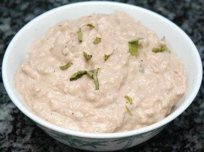

| Zutaten für 4dl | |
| 2 | frische Eigelbe |
| 1 Tl | milder Senf |
| 1 | gepresste Knoblauchzehe |
| wenig | Pfeffer aus der Mühle |
| 1.5 dl | Olivenöl, nicht kaltgepresst |
| 1 Dose (ca. 200g) | Thon im Salzwasser |
| 1 El | Weissweinessig |
| 2 El | Basilikumblätter |
| Salz, Pfeffer | |
Schwingbesen vom Handrührgerät zusammenbauen
Eigelbe heraus trennen und in ein Behältnis geben. Senf dazugeben, Knoblauch schälen und dazu pressen. Alles gut verrühren
Schwingbesen anmachen und Öl tropfenweise unter Rühren beigeben bis eine dickliche Masse entsteht. Den Rest nach und nach darunter rühren
Thon mit Essig fein pürieren. Basilikumblätter fein hacken und unter die Sauce mischen. Würzen.
Betty Bossi Zeitung 7/04 S. 12
Pro Person: 15 g Eiweiss, 41g Fett, 3 g Kohlenhydrate, 437 kCal oder 1828 kJoule.
Passt prima zu Artischocken: Artischocken
Schmeckte im August 2004 ganz hervorragend.
@LINKBACK_TAG@ @WAKELOCK@